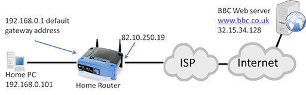

Introduction
IP Addresses
An Internet Protocol address (IP address) is a numerical label assigned to each device connected to a
computer network that uses the Internet Protocol for communication.An IP address serves two main
functions: host or network interface identification and location addressing.
Packets
In telecommunications and computer networking, a network packet is a formatted unit of data carried by a
packet-switched network. A packet consists of control information and user data; the latter is also
known as the payload. Control information provides data for delivering the payload (e.g., source and
destination network addresses, error detection codes, or sequencing information). Typically, control
information is found in packet headers and trailers.
Routing
Routing is the process of selecting a path for traffic in a network or between or across multiple
networks. ... Packet forwarding is the transit of network packets from one network interface to another.
Intermediate nodes are typically network hardware devices such as routers, gateways, firewalls, or
switches.
Examples
IPv4 addresses are actually 32-bit binary numbers, consisting of the two subaddresses (identifiers)
mentioned above which, respectively, identify the network and the host to the network, with an imaginary
boundary separating the two. An IP address is, as such, generally shown as 4 octets of numbers from 0-255
represented in decimal form instead of binary form.
For example, the address 168.212.226.204 represents the 32-bit binary number
10101000.11010100.11100010.11001100.
The binary number is important because that will determine which class of network the IP address belongs to.
An IPv4 address is typically expressed in dotted-decimal notation, with every eight bits (octet) represented
by a number from one to 255, each separated by a dot. An example IPv4 address would look like this:
192.168.17.43
IPv4 addresses are composed of two parts. The first numbers in the address specify the network, while the
latter
numbers specify the specific host. A subnet mask specifies which part of an address is the network part, and
which part addresses the specific host.
A packet with a destination address that is not on the same network as the source address will be forwarded,
or
routed, to the appropriate network. Once on the correct network, the host part of the address determines
which
interface the packet gets delivered to.
Why we use theses?
A private IP address is the address of your device connected on the home or business network. If you have a few
different devices connected to one ISP (Internet Service Provider), then all your devices will have a unique
private IP address. This IP address cannot be accessed from devices outside your home or business network.
For example: 192.168.1.1
Private IP addresses are not unique because there are limited number of devices on your network.
You can find out the private IP address of your device using a few techniques. If you are a Windows user, then
simply go to the command prompt and enter the command ipconfig. If you’re a mac users, then you need to enter
the following command ifconfig in your Terminal app
If you are using the internet on a mobile phone, then you can go to your WiFi settings to find out the IP
address. iOS users can find the IP address by clicking on the ‘i‘ button next to the network they are connected
to. Android users can click on the network name in their WiFi settings, and it will show the IP address.

Your public IP address is the main IP address to which your home or business network is connected. This IP
address connects you to the world, and it’s unique for all users.
To find out your public IP address, simply go to SupportAlly site in your browser, and it will display the
public IP, and other browser information.
All private and public IP addresses can be either static or dynamic. IP addresses that you configure manually
and fix them to the network of your device are called static IP addresses. Static IP addresses cannot change
automatically.
The dynamic IP address configures automatically and assign an IP to your network when you set up the router with
internet. This distribution of IP addresses is managed by Dynamic Host Configuration Protocol (DHCP). DHCP can
be your internet router that assigns an IP address to your network in your home or business environment.